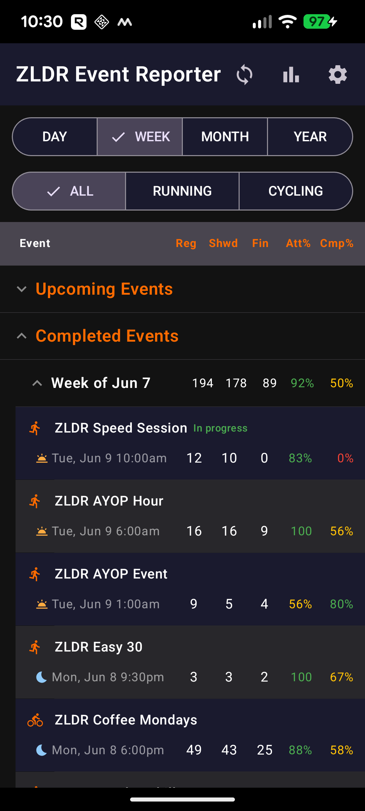
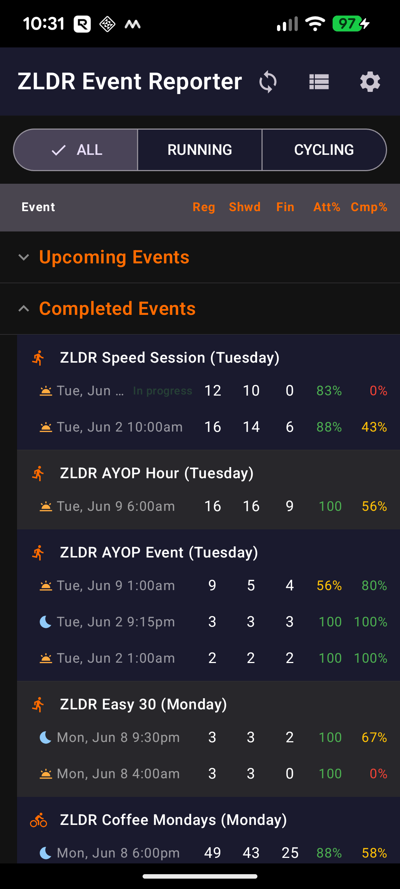
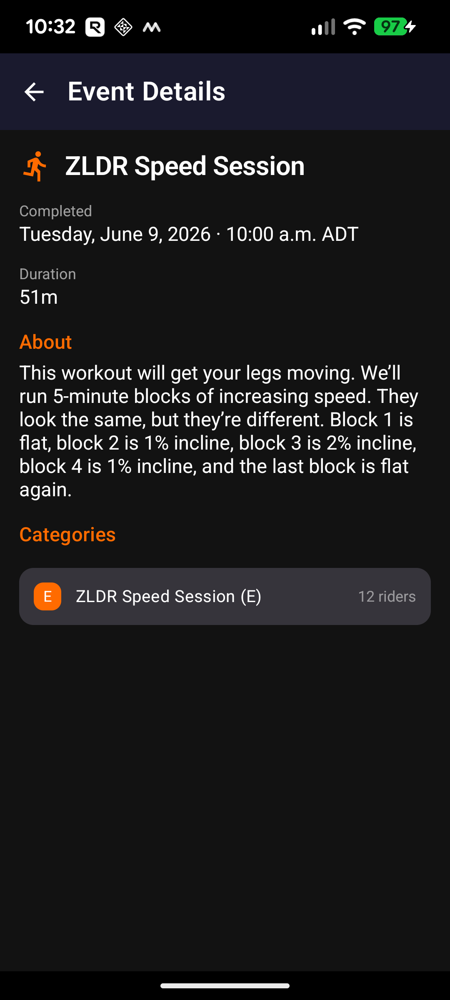
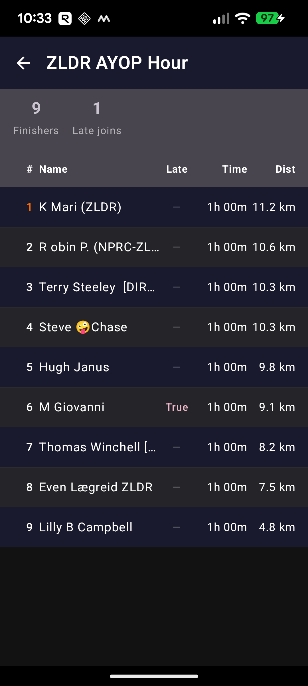
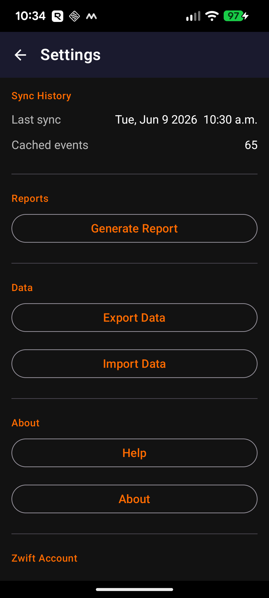
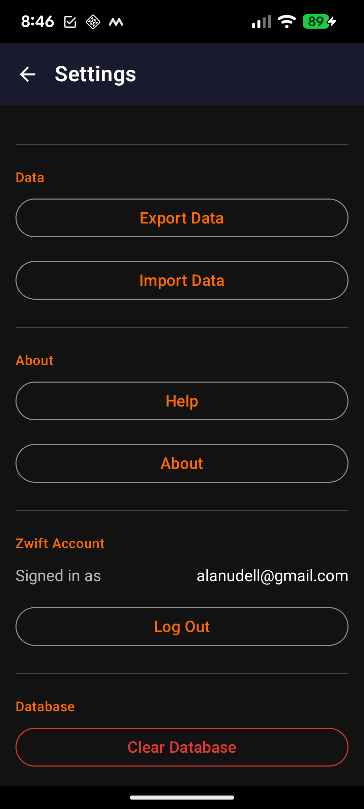
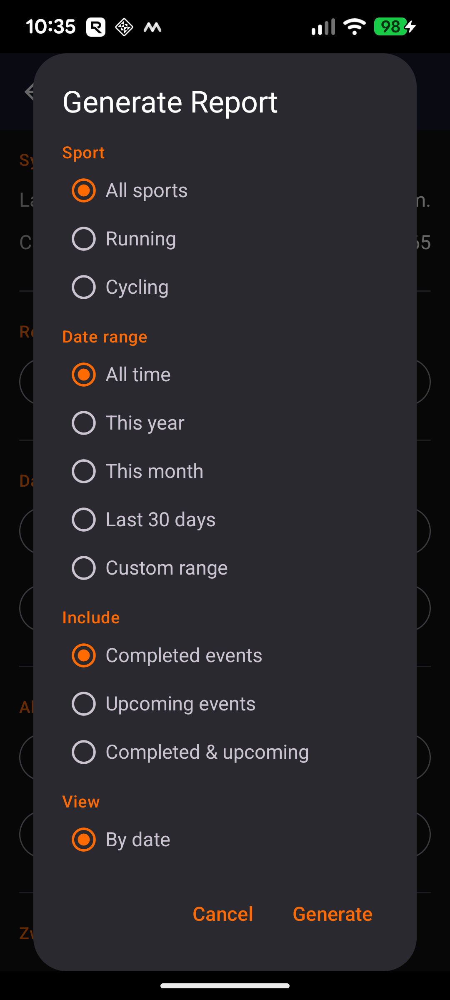

ZLDR Event Reporter is an Android app for members of Zwift Long Distance Runners and Riders (ZLDR). It automatically syncs with the Zwift platform to collect attendance statistics for every ZLDR running and cycling event — how many riders registered, showed up, and finished.
The app is useful for two audiences:
On first launch you are prompted to sign in with your Zwift credentials (email and password). The app uses your account only to retrieve event data; credentials are stored securely on your device using Android's encrypted storage and are never transmitted to any server other than Zwift.
After signing in the app performs its first sync automatically. This discovers all upcoming ZLDR events and fetches attendance counts for recent past events. The process typically completes within a few seconds on a good connection.

The Reports screen is the main screen of the app. It opens in Date view by default, grouping events by the selected time period. Two rows of filter buttons appear at the top:
Events are organised into two collapsible top-level sections:
Tap any period row header (e.g. Week of Jun 7) to expand or collapse it. Each event row shows the event name and sport icon on the first line, and date + stat columns on the second line.
| Column | Full name | What it means |
|---|---|---|
| Reg | Registered | Riders who signed up before the event |
| Shwd | Showed Up | Riders who joined the event in-game |
| Fin | Finished | Riders who completed and appear in Zwift's results |
| Att% | Attendance rate | Shwd ÷ Reg — green ≥70%, amber ≥40%, red <40% |
| Cmp% | Completion rate | Fin ÷ Shwd — same colour scale |
Tap any column header label in the header bar to see its full definition in a popup.

Tap the bar-chart icon in the top bar to switch to Series view. This groups all events by their recurring series name and day of the week — for example, ZLDR AYOP Hour (Tuesday) — making it easy to see participation trends across multiple occurrences of the same event.
Each series row shows aggregate totals across all occurrences (Reg, Shwd, Fin) alongside the overall Att% and Cmp%. Individual occurrence rows are listed beneath each series row, most recent first.
As with Date view, the screen is split into Upcoming Events (collapsed, nearest first) and Completed Events (expanded, most recent first).
Tap the icon again to return to Date view.
Three gestures are available on any event row in both Date and Series views:

Tap once on any event row to open the Event Details screen. It shows:
For completed events where all three counts (Reg / Shwd / Fin) are zero, a Re-fetch banner appears at the top. Tapping Re-fetch resets the event so the next sync attempts to retrieve the data from Zwift again. This can happen if the sync ran before Zwift had finished recording the results.

Double-tap any completed event row to open the Participant List. Each row shows:
Summary counts at the top show total Finishers and Late Joins. Loading the participant list also updates the Fin count stored for that event, so the Reports screen stays accurate.
If Zwift has not yet posted results, the screen shows Results not yet available for this event. Check back a few minutes after the event ends and sync again.


Tap the gear icon in the top-right corner of the Reports screen to open Settings.
Shows the date and time of the last successful sync, and the total number of events currently stored on your device.
Opens the Report Generator dialog — see the next section for full details.
Saves all event records to a JSON backup file and opens the Android share sheet so you can send it to cloud storage, email, or another app. Useful before switching phones or as a periodic backup.
Opens a file picker to load a previously exported backup. Records from the file are merged into the local database. If the same event exists in both the backup and on the device, the backup version wins — so import an older backup with care.
Help opens a quick-reference guide to all major app features. About shows the current version number and build date.
Signs you out of your Zwift account. Cached event data is not deleted — only the stored credentials are removed. You will need to sign in again before the next sync.
Permanently deletes all cached events and resets the sync history. Use this only if you need to start completely fresh. This cannot be undone — use Export Data first to preserve your history.

Tap Generate Report in Settings to open the report options dialog. Configure each option, then tap Generate.
| Option | Choices | Notes |
|---|---|---|
| Sport | All sports · Running · Cycling | Filters which events are included |
| Date range | All time · This year · This month · Last 30 days · Custom | Custom opens a date picker for start and end dates |
| Include | Completed · Upcoming · Both | Upcoming rows show Reg only; Shwd/Fin/Att%/Cmp% are blank |
| View | By date · By series | By series groups recurring events together with aggregate totals |
| Format | CSV · Plain text · HTML · PDF | See below |
After generation, the Android share sheet opens so you can save the file, attach it to an email, post it to a messaging app, or open it directly.